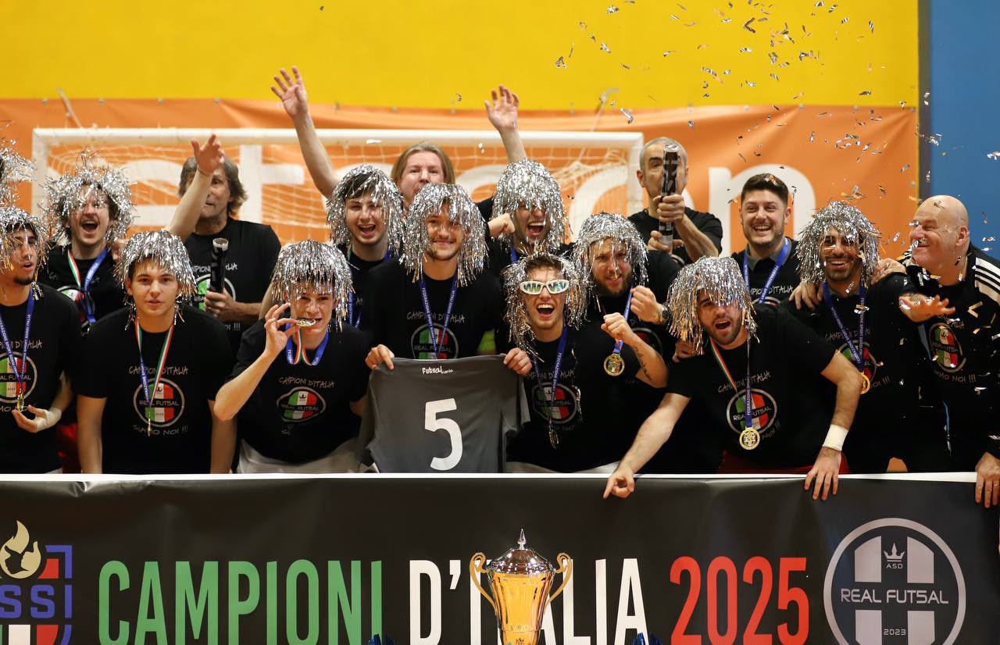

Siamo Tornati: al via la stagione 2026/2027
Parte una nuova stagione. La dirigenza riparte per inseguire il primo Scudetto FSSI, l'unico titolo che ancora manca. «La storia continua».
Post ufficiale → •
•
 •
•
 •
•


Aggiornamenti dal mondo Real Fut5al: stagione, competizioni e appuntamenti.
Parte una nuova stagione. La dirigenza riparte per inseguire il primo Scudetto FSSI, l'unico titolo che ancora manca. «La storia continua».
Post ufficiale →
Pranzo all'Ostu Dal Maslè e ringraziamento al fondatore Luca Toniolo. Il comunicato del 31 maggio chiude il bilancio della stagione 2025/26.
Fonte: Telegram del club →
A Leinì il GSS Torino vince la finale 8–0. Per la Real Fut5al la stagione si chiude con il secondo posto in Supercoppa FSSI.
Fonte: Telegram del club →
Al Pala Jacazzi finale 4–4 contro il GSS Torino. La Real Fut5al conquista il trofeo vincendo la serie dei rigori 5–4.
Fonte: Telegram del club →
Al Pala Maggiore di Leinì la Real Fut5al supera Real e Non Solo 8–3 nella finale per il terzo posto e conquista il bronzo nazionale.
Fonte: Telegram del club →
Al Pala Roma la Real Fut5al batte il CDS Huelva 7–5 e conquista la Deaf Champions League alla prima partecipazione.
Fonte: Telegram del club →
A Verano Brianza la Real Fut5al batte SSS Siena 7–2 nella finale del Campionato Italiano Under 21 FSSI.
Fonte: Telegram del club →